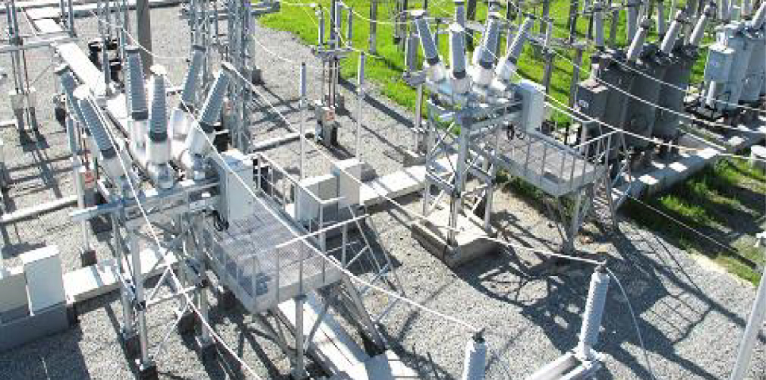

Современные предприятия топливно-энергетического комплекса (ТЭК) являются крупными, территориально распределенными организациями и включают в себя ряд объектов различной функциональности и территориальной удаленности. Для создания единой системы связи на распределенных предприятиях ТЭК, оптимизации процессов управления и организации работ, оперативной реакции на проблемы технологического или аварийного характера, обеспечения мобильности сотрудников на всей территории предприятия с определением их местоположения предназначена общепромышленная система микросотовой связи «Гудвин Бородино».
 В качестве типового реализованного проекта можно привести в пример систему микросотовой связи, построенную на ПС «Снежная» Тюменской области.Создание современной коммуникационной сети, соответствующей высокому уровню предприятия и отвечающей специфическим требованиям промышленного комплекса;
Возможность поэтапного расширения сети связи в условиях непрерывного режима работы предприятия по мере развития производственных мощностей.
Производство непрерывного цикла предъявляет особые требования к надежности и оперативности связи — технологический сбой на одном участке влечет за собой нарушение процессов и на других участках. От скорости принятия решений напрямую зависит бесперебойное электроснабжение предприятий топливно-энергетического комплекса, жилых и производственных районов ХМАО-Югры и юга Тюменской области.
Общая площадь территории ПС составляет более 2 га с промышленными и административными зданиями. Основную часть территории занимают открытые площадки, где оборудование связи подвергается воздействию внешней атмосферной среды, а также повышенному уровню электромагнитных и шумовых помех.
Сеть включает существующую проводную телефонию и обслуживает как беспроводных, так и стационарных абонентов. Ядро системы — контроллер базовых станций — расположен в помещении серверной и подключен к телефонной станции «Протон» по протоколу QSIC. 6 базовых станций образуют микросотовую сеть, обеспечивающую непрерывность соединения при перемещении абонента с радиотелефоном по всей территории ПС. Базовые станции располагаются в помещениях, а также на наружных осветительных мачтах в специальных термошкафах, компенсирующих климатические перепады температур и влажности. Управление и техобслуживание системы осуществляется оператором через локальную сеть передачи данных.